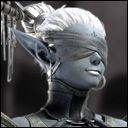

Firiel
Sexe : Femme
Race : Elfe
Faction : Alliance
Formation : Druide
Description : Il y a plus de 20 ans de cela, par une sombre nuit d'Automne, vint au monde une jeune fille. L'accouchement fut difficile, l'enfant se présentait mal et il fallut tout le savoir des sages elfes (ma mère était Elfe, mon père humain) pour permettre à la jeune fille de rejoindre notre monde.
C'est par cette même nuit d'Automne que l'enfant quitta ce monde. L'épreuve fut sans doute trop dure et le bébé émis sont dernier souffle avant d'émettre le premier. Ses parents la nommèrent "Firiel", qui signifie en Quenya, l'ancien langage des elfes, "Elle qui soupira" ou "Elle qui est morte".
C'est dans les larmes et la tristesse que Firiel fut transporté sur un grand autel en bois afin de permettre a tous de se recueillir avant la cérémonie. Pendant deux jours tous défilèrent, laissant une fleur, un pendentif, un mot en mémoire du bébé trop vite disparue. Le soir du 2eme jour s'avança Anil-Gandel, Une torche à la main, s'abaissant, prêt à mettre le feu à l'autel. C'est alors qu'elle poussa son premier cri, un cri semblable a tous ceux des enfants qui viennent de naître. Devant tout le peuple rassemblé, celle qu'on croyait morte revint à la vie.
La mort n'avait pas voulu d'elle. Pour qu'elle raison ? Nul ne pouvait l'imaginer. De sa naissance mouvementée elle garda deux distinctions. La première était la faculté de parler avec les esprits. Elle qui avait côtoyé la mort gardait un lien fort avec les âmes disparues. Ils la guidaient, elle était entièrement dépendante d'eux car l'autre distinction qu'elle ramena de la mort faisait d'elleune aveugle. Celle qui avait vu le monde des morts ne verrait jamais le monde des vivants.
Heureusement, en privant Firiel d'un des 5 sens, Dame Nature dans sa grande bonté, fit en sorte que les 4 restants soit bien plus développés que celle de ses frères et soeurs. Elle pouvait reconnaitre quelqu'un rien qu'en entendant battre son coeur. Elle pouvait lire des livres rien qu'en ressentant le relief laissé par l'encre sèché sur les feuilles. Elle connaissait le goût et l'odeur de chaque chose en ce monde. Dame Nature était son guide, et Firiel, a tout jamais, son emmissaire.
Sa vie
Plus d'infos sur Firiel >>>Lire les 2 récits de Firiel >>>
Ellay
Sexe : Femme
Race : Elfe
Faction : Alliance
Formation : Prêtre
Description : Il m'arrive parfois de me questionner sur l'origine de mes ancêtres, et cela car les nobles anciens qui ont quitté le monde des mortels ont emportés avec eux certains de nos plus lointains secrets. J'ai des souvenirs de ma jeunesse passée au monastère; des bribes de ma mémoire marquée par cette période d'isolement absolu défilent sous mes yeux sans que j'en comprenne complètement le sens.
Certaines réponses demeurent dans les vestiges du passé ...
À travers la prière, nous, prêtres de la nuit, cherchons notre propre voie, celle sur laquelle nous aspirons à servir Élune, déesse de la Lune. Tout comme nos ancêtres, les plus braves d'entre nous aspirent vers l'ultime reconnaissance stellaire. Cependant, je crois fermement que seuls ceux au coeur impregné d'humilité et de sainte pureté arriveront à leurs fins.
Tant de questions et si peu de réponses. Ma quête de souvenir est elle sans fin ?
Plus d'infos sur Ellay >>>